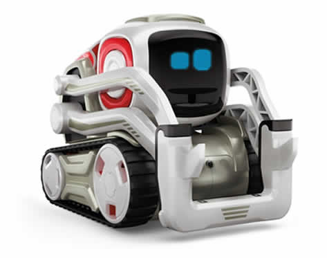
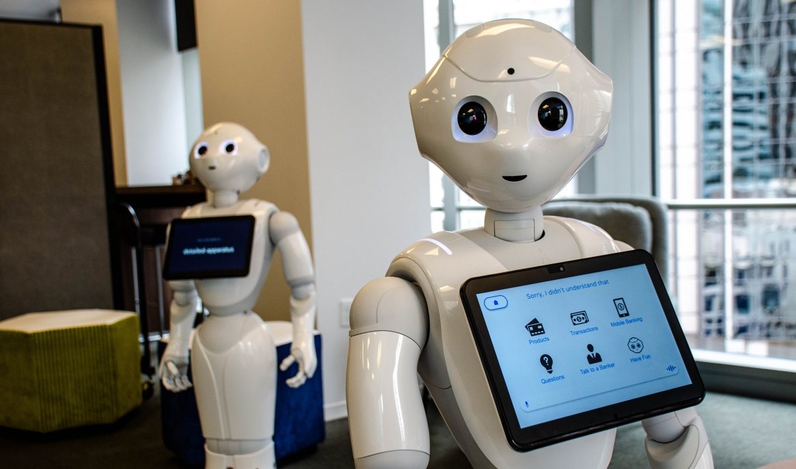
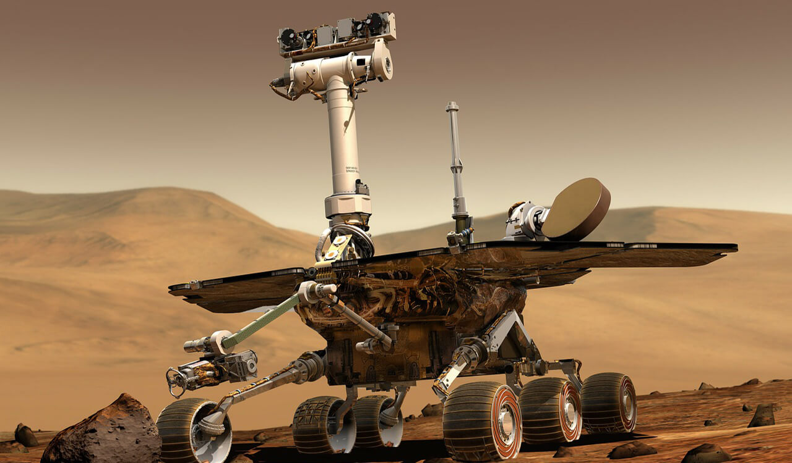
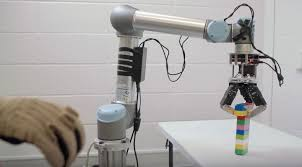

Robots all consist of some sort of mechanical construction. The mechanical aspect of a robot helps it complete tasks in the environment for which it’s designed. For example, the Mars 2020 Rover’s wheels are individually motorized and made of titanium tubing that help it firmly grip the harsh terrain of the red planet.
Robots need electrical components that control and power the machinery. Essentially, an electric current (a battery, for example) is needed to power a large majority of robots.
Robots contain at least some level of computer programming. Without a set of code telling it what to do, a robot would just be another piece of simple machinery. Inserting a program into a robot gives it the ability to know when and how to carry out a task.
Pre-programmed robots operate in a controlled environment where they do simple, monotonous tasks. An example of a pre-programmed robot would be a mechanical arm on an automotive assembly line. The arm serves one function — to weld a door on, to insert a certain part into the engine, etc. — and it's job is to perform that task longer, faster and more efficiently than a human.
Humanoid robots are robots that look like and/or mimic human behavior. These robots usually perform human-like activities (like running, jumping and carrying objects), and are sometimes designed to look like us, even having human faces and expressions. Two of the most prominent examples of humanoid robots are Hanson Robotics’ Sophia (in the video above) and Boston Dynamics’ Atlas.
Autonomous robots operate independently of human operators. These robots are usually designed to carry out tasks in open environments that do not require human supervision. An example of an autonomous robot would be the Roomba vacuum cleaner, which uses sensors to roam throughout a home freely.
Teleoperated robots are mechanical bots controlled by humans. These robots usually work in extreme geographical conditions, weather, circumstances, etc. Examples of teleoperated robots are the human-controlled submarines used to fix underwater pipe leaks during the BP oil spill or drones used to detect landmines on a battlefield.
Augmenting robots either enhance current human capabilities or replace the capabilities a human may have lost. Some examples of augmenting robots are robotic prosthetic limbs or exoskeletons used to lift hefty weights.